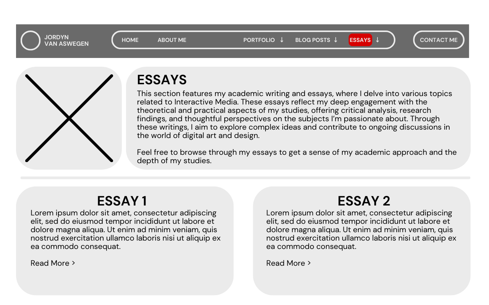

Wireframes 1st Iteration - desktop version
Homepage

Portfolio Homepage

Blog Homepage

Contact Me Page

My initial wireframes serve as a solid starting point, effectively carrying out the comic book aesthetic I envisioned. However, they feel more focused on the overall design and visual style rather than being fully consolidated for web functionality and structure. At this stage, they lean more toward shaping the website’s aesthetic rather than its core framework.
I only created four of the main pages as a base point (Homepage, Portfolio Homepage, Blog Homepage, Contact Me), incorporating graphics and layout ideas to establish the visual direction. As we progress, my Interaction Design (IxD) process will further develop, allowing me to refine these wireframes while considering user needs and my overall design goals more deeply.
Wireframes 2nd Iteration - desktop
Homepage

About Me Page
Portfolio Homepage
Animation Portfolio Homepage
2D Animation
3d Animation
Art Portfolio Homepage
Traditional Art
Digital Art
Game Development Homepage
Blog Posts Homepage
Blogpost Example Page
Essays Homepage
Essay Example Page
Contact Me Page
My second iteration of wireframes is a significant step forward in creating a user-centered website experience. Unlike my first wireframes, which primarily focused on aesthetics, this version is far more structured and aligned with the functional aspects of web design.
In this iteration, I expanded the wireframes to cover over 15 pages, ensuring a well-defined layout for each section of the site. I incorporated essential design elements such as:
- Drop-down menus for seamless navigation.
- Headers and footers to provide structure and accessibility.
- Navigation bars and scrollbars to enhance usability.
- Image placement that follows a logical flow.
- Left-aligned and center-aligned text for readability.
- Proper headings and body content to improve content hierarchy.
- Thoughtful spacing and white space to make the layout more user-friendly.
- This version focuses not just on design but on usability and accessibility, ensuring that my target audience—potential employers and clients—can navigate the site intuitively. By specifying the content and function of each page in detail, I’ve created a stronger foundation for user experience (UX).
>
Another key improvement is my consideration of Interaction Design (IxD). This iteration ensures that my design choices actively support user needs and goals. For instance, I’ve designed my navigation system to make it easier for users to find my work, whether it’s game prototypes, animations, or artwork. The structured site mapping ensures smooth transitions between sections, reinforcing a logical and intuitive browsing experience.
As my project progresses, I’ll refine these wireframes even further, integrating insights from usability testing and refining the Interaction Design process to enhance both aesthetics and functionality.
Wireframes 3rd Iteration - desktop version + mobile
Desktop Version
Homepage
About Me Page
Portfolio Homepage
Animation Portfolio Homepage
2D Animation
3d Animation
Art Portfolio Homepage
Traditional Art
Digital Art
Game Development Homepage

Blog Posts Homepage
Blogpost Example Page
Essays Homepage
 Essay Example Page
Contact Me Page
For the third iteration of my desktop wireframes, I focused on cleaning up the design and improving clarity. One of the biggest changes I made was removing the background images, which previously added a strong visual aesthetic but also contributed to visual clutter. By stripping them away, the layout now feels more structured, professional, and easier to navigate.
This iteration is more refined in terms of spacing, alignment, and readability. Without the background images, the content stands out more, allowing users to focus on key elements without distractions. I also made small refinements to the layout, ensuring better consistency in margins, padding, and section divisions. These improvements make the wireframes more aligned with functional web design principles, focusing on usability rather than just aesthetics.
With this cleaner and more structured approach, my design is now better suited for further development, ensuring a strong balance between visual appeal and user experience.
Mobile Version
Homepage
About Me Page
Portfolio Homepage
Animation Portfolio Homepage
2D Animation
3d Animation
Art Portfolio Homepage
Traditional Art
Digital Art
Game Development Homepage
Blog Posts Homepage
Blogpost Example Page
Essays Homepage
Essay Example Page
Contact Me Page
As part of my website development process, I created a mobile version that aligns with the constraints and usability needs of smaller screens. Unlike the desktop version, which has a more complex layout, the mobile version is designed to be streamlined and optimized for touch-based interaction.
One of the biggest challenges in mobile web design is limited screen space. Unlike desktops, where multiple elements can be displayed side by side, mobile screens require a more vertical and condensed layout. To address this, I:
Simplified the header and footer to reduce clutter. Instead of complex navigation, I focused on essential links.
Implemented more drop-down menus to keep the interface clean while still providing easy access to different sections.
Adjusted text alignment and spacing to ensure readability on smaller screens. Text that was previously side-by-side is now stacked for better legibility.
Prioritized touch-friendly navigation by increasing button sizes and spacing for easier interaction.
Mobile Limitations and Design Adjustments
Mobile design has unique limitations that require careful planning. Some of the key considerations I accounted for include:
- Screen Size & Layout Adjustments
Mobile screens are smaller, meaning content needs to be stacked vertically rather than placed side by side.
A single-column layout works best for readability and ease of navigation.
Images need to be optimized to fit within the screen without excessive scrolling.
- Navigation & Accessibility
No hover states: Unlike desktop interfaces, mobile users rely on taps, so elements need to be clearly visible and easy to interact with.
Hamburger menus and drop-downs replace extensive navigation bars to save space while keeping all pages accessible.
- Performance & Loading Speeds
Mobile users often experience slower network speeds, so I ensured that images and assets were optimized to prevent long load times.
The simplified footer and header help reduce excess elements that could slow down page rendering.
- Touch Interaction & Usability
Mobile users navigate using their fingers, so buttons and links need to be large enough to tap without accidental clicks.
Scroll behavior must be smooth, ensuring that users can move between sections without frustration.
By adapting my wireframes to fit mobile limitations while maintaining the core user experience, I’ve created a version that prioritizes usability on smaller screens. The adjustments ensure that mobile users have the same intuitive experience as desktop users, but with an interface optimized for smaller screens, touch interaction, and ease of navigation.
You can Checkout my Annotated Wireframe Drawings here :
Annotated Wireframes Iteration 3